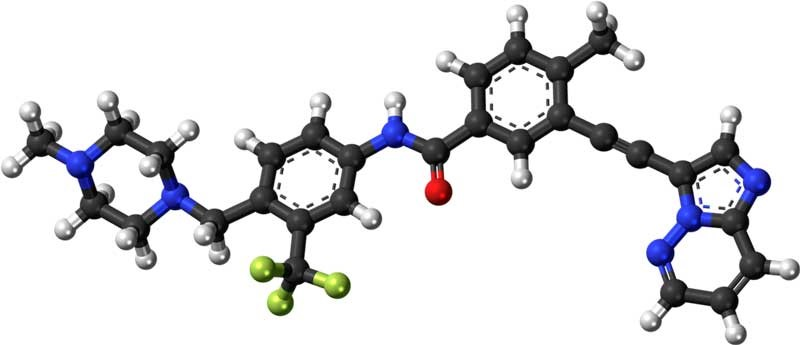

Удивительные применения квантовых компьютеров
-
Моделирование Молекул
Моделирование молекул и их поведения в различных условиях очень важно в области химии и биологии. Потому что симуляция позволяет химикам и биологам изучать молекулы и их взаимодействие, не выполняя фактический эксперимент.
Для моделирования молекул используются классические компьютеры, которые налагают множество ограничений и могут обрабатывать только ограниченное количество молекул. Тем не менее квант может нарушить эти ограничения и позволит моделировать очень сложные молекулы в очень больших компьютерах.
Квантовый компьютер семибитового чипа уже был опробован на моделировании молекул гидрида бериллия (BeH 2). Конечно, это может вас не впечатлить, но подумайте немного о семибитовом чипе, выполняющем симуляцию. Мощность квантового компьютера значительно возрастет, если вы увеличите только несколько кубитов. Мощность квантовых компьютеров увеличивается экспоненциально с увеличением каждого кубита.